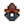

Guilde des aventuriers
| Guilde des aventuriers | |
 | |
 | |
| Heures d'ouverture : | De 14h à 02h |
| Adresse : | A droite des Mines, en haut à droite de la ville |
| Occupants : | |
La Guilde des Aventuriers est localisée à l'Est des Mines et est le domicile de Marlon et Gil. Le joueur peut y acheter et y vendre des Armes, des Bottes et des Anneaux. Marlon rachète les armes, bottes, anneaux, et les butins de monstre du joueur.
Pour accéder à la Guilde des Aventuriers, le joueur doit d'abord compléter la quête "Initiation". Une fois débloquée, la Guilde est ouverte tous les jours de 14h00 à 02h00, sauf les jours de festival.
Intérieur
A l'intérieur du bâtiment de la Guilde des Aventuriers, les joueurs peuvent trouver Marlon derrière le comptoir, qui vend des armes, des bottes et des anneaux. Gil est installé dans sa chaise à bascule à côté du feu, et à la gauche de la cheminée se trouve la liste des objectifs d'éradication de monstres.
Ni Marlon ni Gil n'acceptent de cadeaux, ils ne peuvent pas gagner de points d'Amitié avec le joueur et aucun des deux n'a de chambre où le joueur peut entrer. La pièce du fond est accessible après avoir éliminé 1000 monstres.[1] Dans cette pièce se trouve une boîte avec le livre Cartographie des systèmes des cavernes.

Objectifs d'éradication de Monstres
Une liste du nombre de certains des types de Monstres que vous avez tué se trouve sur le mur à droite du bureau de Marlon. Quand un certain nombre de monstres a été tué, Gil accorde une récompense au joueur. Les récompenses obtenues grâce aux objectifs d'éradication peuvent être achetées auprès de Marlon une fois qu'elles ont été débloquées. Si jamais l'inventaire du joueur est plein au moment de l'ouverture de la fenêtre de dialogue d'obtention de la récompense, il ne pourra pas récupérer la récompense après avoir fermé la fenêtre. Si jamais votre inventaire est plein vous pouvez sélectionner un objet dans votre inventaire et le déposer au sol le temps de récupérer la récompense. Autrement vous devrez racheter la récompense à Marlon.
| Type de monstre | Quantité | Récompense | Description de la récompense |
|---|---|---|---|
sauf les grands) |
1000 | Empêche les dégàts causés par les Slimes. | |
| Esprits des Ombres: |
150 | Octroie un boost de vitesse limité à chaque monstre tué. | |
| Chauves-souris: |
200 | Octroie un peu de santé à chaque monstre tué. | |
| Squelettes: |
50 | Les yeux rouges brillent mystérieusement. | |
| Insectes des Cavernes: |
80 | Pas très agréable à manier. | |
| Fouisseurs: |
30 | Garde votre tête droite. | |
| Esprits de poussière: |
500 | Les monstres ont plus de chance d’avoir du butin. | |
| Crabes Rocheux: |
60 |  Bague coquille de crabe | Le haut de la bague est fabriqué à partir d’une carapace de crabe enchantée. |
| Momies: |
100 | Le type de chapeau porté par un sorcier. | |
| 50 | On dirait un vrai ! | ||
| Serpents: |
250 | Après avoir éliminé un ennemi, vous le ferez exploser. | |
| Esprits de magma: |
150 | Numéro de téléphone de Marlon | Pour utiliser le service de récupération d'objets de Marlon depuis votre maison. |
Boutique
| Image | Nom | Description | Débloqué | Prix d'achat | Prix de vente |
|---|---|---|---|---|---|
| Épée rouillée | Une vieille épée rouillée et émoussée. | ||||
| Lame en bois | Pas mal pour un morceau de bois sculpté. | ||||
| Fémur | Un vieil os lourd recouvert de siècles de crasse. | Atteindre le niveau 10 des Mines. | |||
| Dague en fer | Dague commune. | Atteindre le niveau 15 des Mines. | |||
| Sabre en argent | Plaqué argent pour empêcher la rouille. | Atteindre le niveau 20 des Mines. | |||
| Lame d'Elfe | Seules les mains agiles d’un Elfe ont pu la fabriquer. | Atteindre le niveau 20 des Mines. | |||
| Petite épée en acier | Une lame en métal classique. | Atteindre le niveau 20 des Mines. | |||
| Épée de pirate | On dirait qu’elle appartenait autrefois à un pirate. | Atteindre le niveau 25 des Mines. | |||
| Coutelas | Une lame finement travaillée. | Atteindre le niveau 25 des Mines. | |||
| Maillet En bois | L’extrémité est encore solide. Relativement léger pour un maillet. | Atteindre le niveau 40 des Mines. | |||
| Épée claymore | C'est vraiment très lourd. | Atteindre le niveau 45 des Mines. | |||
| Lame de Templier | Elle a appartenu autrefois à un honorable chevalier. | Atteindre le niveau 55 des Mines. | |||
| Dague en cristal | La lame est en quartz purifié. | Atteindre le niveau 60 des Mines. | |||
| Épée en os | Un très léger morceau d'os aiguisé. | Atteindre le niveau 75 des Mines. | |||
| Sabre en acier | Léger et puissant. | Atteindre le niveau 90 des Mines. | |||
| Lame d'obsidienne | C’est incroyablement tranchant. | Atteindre le niveau 90 des Mines. | |||
| Katana de lave | Une lame puissante forgée dans une mare de lave bouillonnante. | Atteindre le fond des Mines. | |||
| Épée galactique | Elle ne ressemble à rien de connu. | Apporter un Tesson prismatique aux Trois piliers du désert. | |||
| Dague galactique | Elle ne ressemble à rien de connu. | Après avoir obtenu l'Épée galactique. | |||
| Marteau galactique | Il est fabriqué à partir d’un matériau ultra-léger jamais vu auparavant. | Après avoir obtenu l'Épée galactique. | |||
| Baskets | Un peu légères... mais à la mode ! | ||||
| Bottes en cuir | Le cuir est très souple. | Atteindre le niveau 10 des Mines. | |||
| Bottes de chantier | Chaussures renforcées pour une protection supplémentaire. | Atteindre le niveau 10 des Mines. | |||
| Bottes de toundra | La doublure duveteuse garde vos chevilles au chaud. | Atteindre le niveau 50 des Mines. | |||
| Bottes de combat | Renforcées avec de la maille en acier. | Atteindre le niveau 40 des Mines. | |||
| Bottes marche-feu | On dit qu'elles peuvent supporter le magma le plus chaud. | Atteindre le niveau 80 des Mines. | |||
| Bottes noires | Faites en cuir noir épais. | Atteindre le niveau 80 des Mines. | |||
| Bottes de l'espace | Faites avec un tissage d’iridium qui leur donne un éclat violet. | Atteindre le niveau 110 des Mines. | |||
| Bague en améthyste | Augmente la contre-attaque de 10 %. | Compléter la quête "Initiation" (tuer 10 Slimes) | |||
| Bague en topaze | Augmente la précision d’attaque de 10 %. | Compléter la quête "Initiation" (tuer 10 Slimes) | |||
| Bague en aigue-marine | Augmente les chances de coup critique de 10 %. | Atteindre le niveau 40 des Mines | |||
| Bague de jade | Augmente les chances de coup critique de 10 %. | Atteindre le niveau 40 des Mines | |||
| Bague d'émeraude | Augmente la vitesse d’attaque de l'arme de 10 %. | Atteindre le niveau 80 des Mines | |||
| Bague de rubis | Augmente l’attaque de 10 %. | Atteindre le niveau 80 des Mines | |||
| Lance-pierre | Requiers des pierres comme munitions. | Atteindre le niveau 40 des Mines. | N/A | ||
| Lance-pierre de maître | Requiers des pierres comme munitions. | Atteindre le niveau 70 des Mines. | N/A | ||
| Munitions explosives | À tirer avec un lance-pierre. | Débloquer la recette des Munitions explosives. | |||
| Épée murale | Peut se mettre à l’intérieur de votre maison. | N/A | |||
| Épée décorative | Peut être placé comme décoration. | N/A | |||
| Anneau charmeur de Slimes | Empêche les dégàts causés par les Slimes. | Tuer 1000 Slimes | |||
| Anneau sauvage | Octroie un boost de vitesse limité à chaque monstre tué. | Tuer 150 Esprits du vide (Chaman des ombres / Brute des ombres) | |||
| Bague de cambrioleur | Les monstres ont plus de chance d’avoir du butin. | Tuer 500 Esprits de poussière | |||
| Bague vampirique | Octroie un peu de santé à chaque monstre tué. | Tuer 200 Chauves-souris | |||
| Bague coquille de crabe | Le haut de la bague est fabriqué à partir d’une carapace de crabe enchantée. | Tuer 60 Crabes rocheux | |||
| Bague en napalm | Après avoir éliminé un ennemi, vous le ferez exploser. | Tuer 250 Serpents | |||
 |
Masque de squelette | Les yeux rouges brillent mystérieusement. | Tuer 50 Squelettes | N/A | |
 |
Chapeau rigide | Garde votre tête droite. | Tuer 30 Fouisseur-boueux | N/A | |
 |
Chapeau arcanique | Le type de chapeau porté par un sorcier. | Tuer 100 Momies | N/A | |
 |
Heaume de chevalier | On dirait un vrai ! | Tuer 50 Poivrosaure | N/A | |
| Tête d'insecte | Pas très agréable à manier. | Tuer 80 Insectes des cavernes |
Service de récupération des Objets
Le joueur peut perdre des objets s'il s’évanouit après avoir perdu sa vie dans les Mines, la Mine de la carrière, la Caverne du Crâne, ou le Donjon du volcan. Marlon récupéra tous les objets perdus par le joueur dans le menu "Service de récupération d'Objets" de la Guilde des Aventuriers. Les joueurs peuvent choisir de racheter un des items perdus pour le même prix qu'il aurait valu s'il avait été vendu grâce à la Boite d'expédition. Les objets restent dans le menu du "Service de récupération d'Objets" jusqu'à la prochaine fois que le joueur s'évanouit après avoir perdu sa vie, après ça les objets seront remplacés par les nouveaux objets perdus.
Si le joueur a complété l'Objectif d'éradication de 150 Esprits de magma, il recevra le numéro de téléphone de Marlon. Il permet d'utiliser le service de récupération des objets depuis un Téléphone.
Si le joueur a lu la Cartographie des systèmes des cavernes, une remise de 50% sera appliquée sur le prix de rachat de l'objet perdu.
Références
- ↑ Voir Maps\AdventureGuild.tmx dans les fichiers du jeu.
Historique
- 1.1 : Changement de l'objectif d'éradication pour les insectes de cavernes, il passe de 150 à 125.
- 1.4 : Ajout des Crabes Rocheux, des Momies, des Poivrons Rex et du Serpent aux objectifs d'éradication des monstres. Création du service de récupération des objets.
- 1.4.1 : Augmentation du prix des munitions explosives de 100g à 300g et la recette de fabrication se déverrouille une fois que vous avez un lance-pierre dans votre inventaire.
- 1.5 : Ajout du Lance-pierre et Lance-pierre de maître à la boutique. Correction d'un bug qui ne prenait pas en compte les chauve-souris d'iridium dans l'objectif d'éradication des monstres. Ajout d'un objectif d'éradication pour les Esprits de magma.
- 1.6 : Changement des horaires d'ouverture de 14h00-22h00 à 14h00-02h00. Changement de l'objectif d'éradication des insectes des cavernes de 125 à 80. Ajout d'épées décoratives à la boutique. Lire la Cartographie des systèmes des cavernes baisse le prix du service de récupération d'objets.
- 1.6.9 : Ajout de Épée rouillée, Fémur, Lame d'Elfe, Petite épée en acier, Dague en cristal, Lame d'obsidienne, et Bottes de chantier à la boutique.